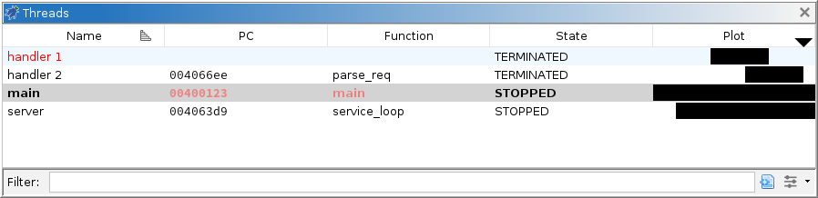

Debugger: Threads

In general, a thread refers to a unit of concurrent execution within a target. Typically,
each thread carries its own execution context, so this window provides a means of navigating
those contexts. The window also plots a timeline showing thread lifespans, and displays a caret
which can be used to navigate the current point in time. This window, the Stack window, the Model window, and the Dynamic Listing window
provide a complete trace navigation system.
Table Columns
- Name - the name or summary of the thread given by the debugger. If a name is not given,
this is just an index or unique id assigned to the thread. This field can be modified, but it
has no effect on the target.
- PC - the program counter of the thread. This is typically the address of the next
instruction it will execute. If the debugger records frames, this is the PC of the innermost
frame.
- Function - the name of the function containing the PC, if Ghidra has the corresponding
module image imported, analyzed, and mapped.
- Module - the name of the module containing the PC. This column is hidden by default.
- SP - the stack pointer for the thread. If the debugger records per-frame registers, this
is the SP from the innermost frame. This column is hidden by default.
- State - the thread's current state. Depending on what is reported by the debugger, this
should be either RUNNING, STOPPED, or TERMINATED. It might also be ALIVE, if the debugger
cannot determine whether or not it is running; or UNKNOWN, if the debugger has lost
track.
- Plot - a graphical representation of the thread's lifespan. Threads which are alive will
appear to extend to the end of time. Unlike other column headers, clicking and dragging in
this one may navigate trace snapshots. To rearrange this column, hold SHIFT while
dragging.
- Comment - a user-modifiable comment about the thread. This column is hidden by
default.
- Path - the path of the thread object in the target's model. This is hidden by default.
See the Model
window.
Navigating Threads
Double-clicking a thread in the table will activate that thread, i.e., it becomes
the current thread throughout the Debugger UI, usually including the debugger's command-line
interface. Notably, the Registers window will
display the activated thread's register values. Listing windows with
configured location tracking will re-compute that location with the thread's context and
navigate to it.